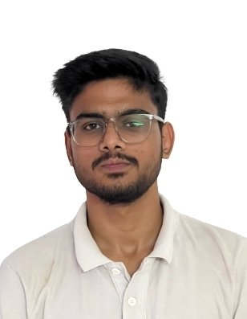

Email: sharmaabhyuday56@gmail.com
LinkedIn: www.linkedin.com/in/abhyuday-sharma-713509314
Github: github.com/ABHYUDAY659
|  | "I'm a CSE graduate with a passion for execution, problem-solving, and growth. I have built hands-on experience in trading, web development, and project management, learning how to navigate risk, strategy, and teamwork. Now, I'm looking to apply my skills in a dynamic role where I can contribute, innovate, and create impact." |
Ans: Passed college on June 2024
Ans: Working on my venture